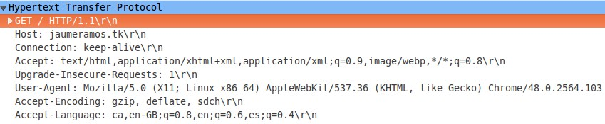
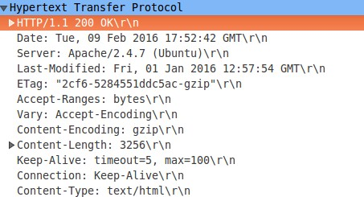
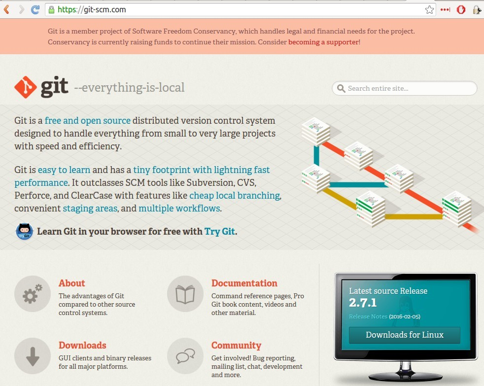
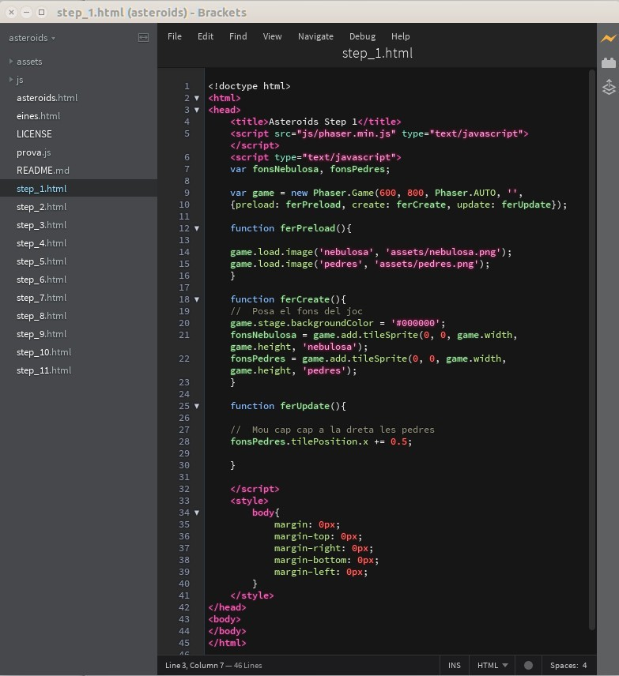
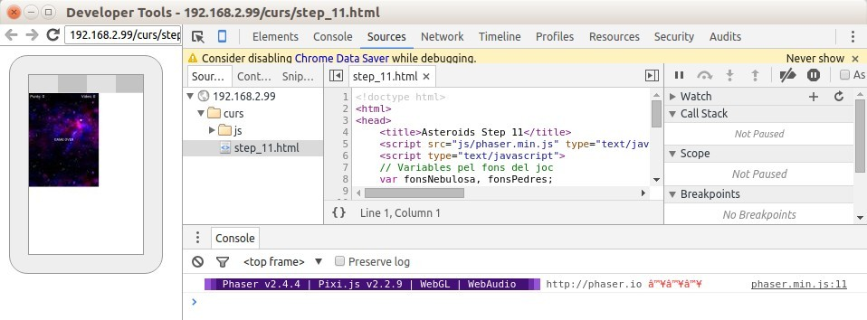

...perquè ara podem!!!

Tecnologies relacionades amb la WEB
Desenvolupament de Jocs
Eines per desenvolupar
ASTEROIDS amb JavaScript


Overview
Darrera el Navegador...
GET / HTTP/1.1

HTTP/1.1 200 OK



HTTP és un protocol
sense estat!
Cada petició és independent de les altres
No recorda res de les peticions anteriors!
WEB 1.0
WEB 2.0
WEB 3.0
- HTTP + HTML
- Només text i imatges
- Documents estàtics que calia editar manualment
- El contingut i la presentació es barrejaven
- HTTP + HTML + CSS + PHP + MYSQL
- Documents dinàmics generats per scripts de servidor
- CSS permet separar el contingut de la presentació
- S'afegeixen elements multimedia mitjançant plug-ins
- Enormes incompatibilitats entre navegadors
- HTTP + HTML5 + CSS3 + JavaScript + AJAX + PHP + BBDDD
- Major estandardització --> Menys diferències entre navegadors
- Suport multimèdia en el mateix navegador
- Millora en la interactivitat de les aplicacions WEB
Evolució de la WEB

CSS3
- Permet seleccionar elements basant-se en el valor dels seus atributs
- Permet arrodonir els cantons de les vores dels elements
- Permet utilitzar una imatge per dibuixar les vores
- Permet afegir ombres i gradients als elements i al text
- Permet afegir transparències (RGB + canal alpha)
- Permet transformar els elements amb rotacions
- Permet afegir Web Fonts a les pàgines

JavaScript
- Creat al 1995 per Brendan Eich a Netscape Corporation
- No té cap relació amb Java (apart del nom)
- Llenguatge de Script (o Interpretat)
- Actualment es troba estandarditzat per la ECMA amb el nom EcmaScript
- Dèbilment tipat (no cal definir el tipus de variables)
- Multiparadigma: Orientació a Objectes, Imperatiu, Funcional
- Basat en prototipus enlloc de classes
- Pràcticament tot en JS són "objectes"
- Els objectes en JS són arrays associatius (parells nom-valor)
- Les funcions són elements first-class ( de fet són objectes )
- Suporta funcions anònimes i closures
- La sintaxi és molt flexible, podent fer el mateix de moltes formes diferents!!!
- Els navegadors actuals fan servir compilació just-in-time per millorar la eficiència
- Disposa d'entorns d'execució fora del navegador (node.js)

JavaScript EC5 vs EC6
- Gran millora en el rendiment dels motors JavaScript
- Estandardització i millora en la compatibilitat entre navegadors
- Nous elements en el llenguatge que incrementen la seva potència
- Millores en la sintaxi per facilitar la llegibilitat del codi
- Permet utilitzar variables amb àmbit de bloc (Block Scope)
- Les Promises milloren el suport a les crides asíncrones
- Suport natiu per utilitzar mòduls (millora la reutilització de codi)
Estructura d'un joc
Carregar elements
Inicialitzar el joc
- Capturar les entrades de l'usuari
- Actualitzar el joc segons les entrades de l'usuari
- Actualitzar el joc segons les seves regles
- Mostrar el resultat


Game Loop

Framework per a Jocs
Eines per
desenvolupar
amb
JavaScript


- Programa per executar aplicacions JavaScript fora del navegador.
- Runtime JavaScript basat en el motor V8 de Chrome
- Arquitectura orientada a events
- I/O Asíncrona i sense bloquejar els recursos
- Codi Obert, suporta múltiples plataformes

Node.js
$sudo apt-get update
$sudo apt-get install curl
$curl -sL https://deb.nodesource.com/setup_4.x | sudo -E bash -
$sudo apt-get install -y nodejs
Per Instal·lar-lo a Linux
- Gestor de versions de programari
- Escalable, molt potent i ràpid
- Molt robust per evitar pèrdua de dades
- Fet per Linus Torvalds (en menys d'una setmana!!)

Per Instal·lar-lo a Linux
$sudo apt-get install git
Brackets
- Fet amb HTML, CSS i JavaScript
- Editor orientat al desenvolupament Web
- Permet editar codi CSS inline
- Desenvolupat per ADOBE
- Open Source (MIT License)
- Live Preview (visualitza en Chrome els canvis fets al codi)
- Permet importar elements i colors des de PhotoShop
Per Instal·lar-lo a Linux
$curl -L -o brackets.deb https://github.com/adobe/brackets/releases/download/release-1.6%2Beb4/Brackets.1.6.Extract.64-bit.deb
$sudo dpkg -i brackets.deb
$sudo dpkg -i brackets.deb
Presentacions amb HTML5 + CSS3 + JavaScript
- Es poden visualitzar en qualsevol navegador
- Poden tenir transicions visualment atractives
- Totalment personalitzables
- Fàcils de convertir a altres formats (pdf...)
- Hi ha moltes llibreries per fer presentacions
Editors HTML WYSIWYG OnLine
- Permeten editar documents HTML sense instal·lar res
- Fets amb JavaScript
- Podem copiar el codi HTML generat

Eines WYSIWYG CSS3 OnLine
- Ajuden a crear el codi CSS pels estils
- Simplifiquen obtenir resultats efectius
INSERT COIN TO START
ASTEROIDS

Previsualitzar el codi amb Brackets
- Només funciona amb Chrome
- Permet veure immediatament el resultat
- Obre una nova finestra del navegador



Depurar el codi en un dispositiu mòbil
- Habilitar USB debugging (https://goo.gl/npHhnf)
- Cal connectar el dispositiu mòbil per USB
- Anar a la pàgina chrome://inspect/#devices
- Escollir el dispositiu i la pestanya a monitoritzar
- Al dispositiu acceptar la petició per depurar
- S'obre una nova finestra chrome amb les eines de depuració


GAME OVER!
ASTEROIDS
Fes servir l'espai o les fletxes dels cursors per navegar